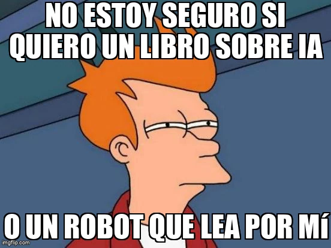

estrategIA #12 ·
Qué pedir por Navidad
El contexto
La edición navideña proponía regalos relacionados con IA. La duda de Fry transforma la elección entre un libro y un robot en otra pregunta: si queremos aprender sobre la tecnología o pedirle que haga también la lectura por nosotros.
Publicado en: estrategIA #12 Innovación bajo el árbol: 10 Ideas de regalos de IA para una Navidad diferente
Leer el texto de la imagen
NO ESTOY SEGURO SI QUIERO UN LIBRO SOBRE IA O UN ROBOT QUE LEA POR MÍ
Marca de la herramienta visible en el original: imgflip.com.